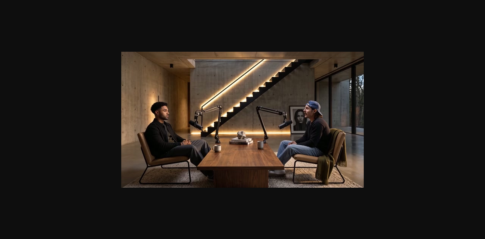

Threads｜AI郵報：HeyGen Video Podcast 從文章/URL 到雙主持人影音節目

AI郵報（@aiposthub）在 Threads 分享 HeyGen 最新 Video Podcast：只要丟入文件、網址或一個想法，幾分鐘內就能生成雙主持人節目，並處理棚景、多機位切換與 B-roll。
Threads 串文重點
AI郵報把流程壓縮為：
文章／資料 → Podcast 腳本 → AI 主持人對談 → 多機位畫面 → 完整影片
貼文判斷這代表內容團隊可以把一篇文章快速延伸成訪談、新聞解讀、課程摘要或品牌節目，不必一開始就準備攝影棚、主持人與剪輯團隊。它也指出 AI 影片生成的戰場正在從「生成單支影片」走向「自動製作完整節目」，未來差距會落在選題、腳本與品牌觀點。
圖片描述
保存的封面圖顯示現代攝影棚/室內訪談場景：兩位男性面對面坐在木桌兩側，桌上有 Podcast 麥克風支架；背景有混凝土牆、懸浮樓梯、暖色燈光與落地玻璃。圖中未見字幕或明確 HeyGen 標誌，較像 Video Podcast 成品預覽或示意封面。
官方來源查核
HeyGen 官方 AI Video Podcast 頁面描述：提交 URL 或 PDF、選擇視覺風格，即可收到 fully edited two-speaker video，包含 synced voices、captions 與 B-roll。頁面也說明兩位 AI hosts 可討論提供的主題，HeyGen 會撰寫 dialogue、分配 speaker roles、同步視覺與聲音並 render 完整影片。
HeyGen Help Center 的 Video Podcast 文章則說明 beta 功能可把 PDF 或 URL 在數分鐘內轉成 video podcast；但它也提示影片 URL（例如 YouTube）當時無法作為輸入。這些官方資訊支持 AI郵報對「文件/URL → 雙主持人影音節目」的核心描述。
對課程與內容團隊的用法
這則可以放進「一魚多吃」內容再製工作流：
- 先把一篇文章或講稿整理成可引用來源。
- 用 AI 產出 podcast 對談腳本，但要求保留重點與引用邊界。
- 生成雙主持人影片作為 YouTube / Reels / 課程摘要。
- 再剪成 Shorts、quote cards 與電子報段落。
重點不是省掉觀點，而是讓同一份內容更容易轉成多種媒介。
風險與限制
- AI 主持人、聲音與肖像屬合成內容，商業發布時需標示並確認品牌規範。
- PDF/URL 可能含版權內容；不可直接把未授權文章大量轉成影片發布。
- 自動腳本可能誤讀原文或生成未在來源中的主張，需要人工 fact-check。
- 影片品質、可選 host、語言、B-roll、匯出解析度與浮水印限制需以 HeyGen 當下方案為準。
- Podcast 節目真正的差異仍在選題、觀點與可信度，而不是只靠自動生成外觀。